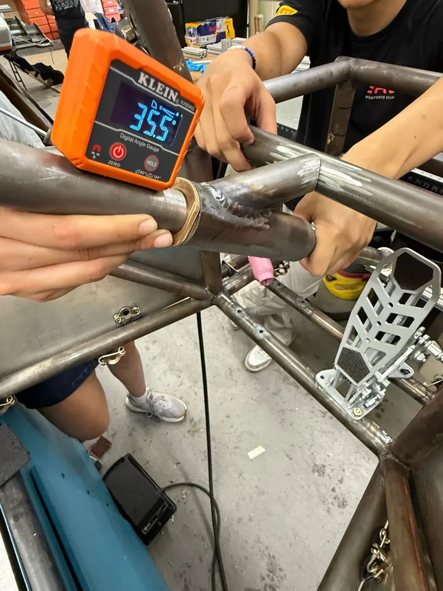
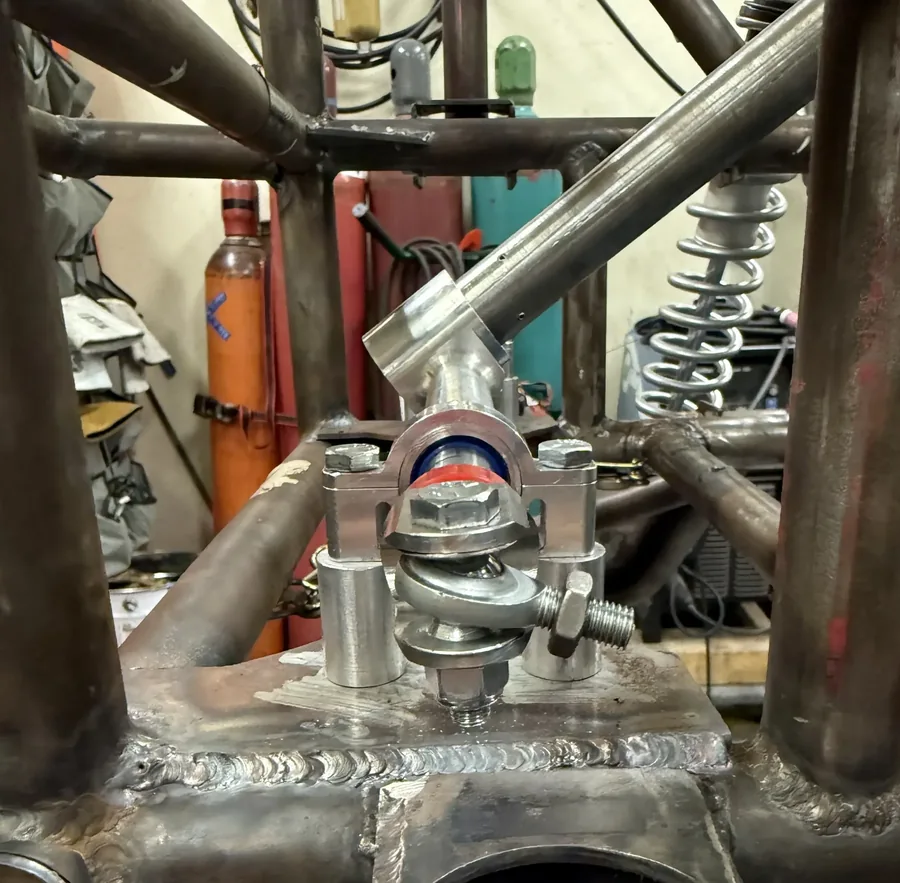
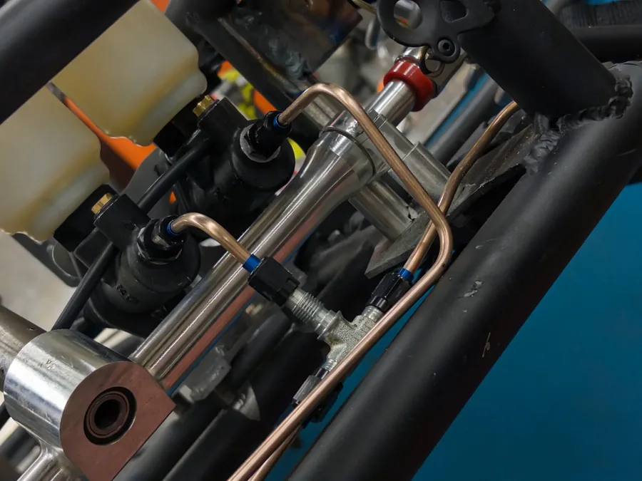
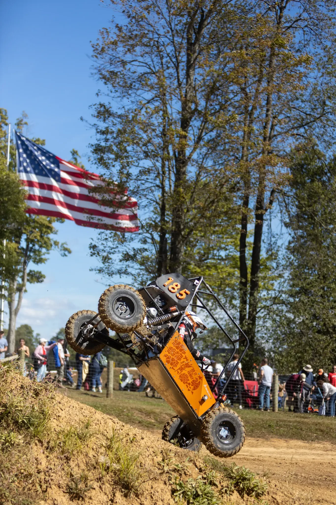
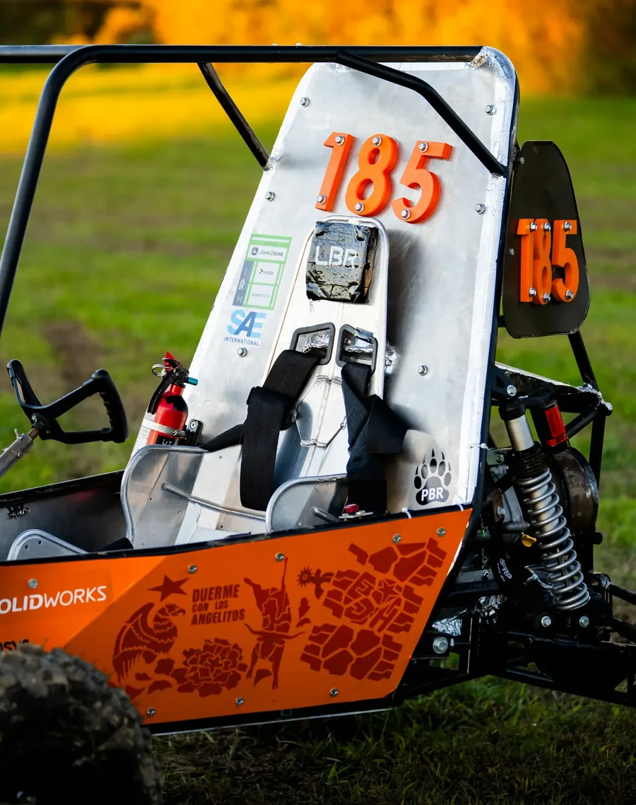

Baja SAE · The University of Texas at Austin
Longhorn
Baja Racing
Co-founder · Team captain · Lead powertrain engineer
The team
Building car 185
In Baja SAE, students design, build, and race a single-seat off-road vehicle. I co-founded Longhorn Baja Racing at UT Austin and secured our competition registration. Our team took car 185 from a shared CAD assembly to the course at Baja SAE Ohio in 2026.
- 200+
- members joined in our first semester
- 12
- engineers on the powertrain team I led
- ~15%
- less pre-competition build time after I revised assembly and inspection procedures
From the workshop






My responsibilities
Leading powertrain
Owning the interfaces
I coordinated the CVT, jackshaft, chain drive, and guarding with our chassis and manufacturing groups. On the next layout, moving the gearbox to make room for the engine would also move the driveline. I brought the dynamics team into that decision before fixing the mount position.
Closing the loop after testing
When the powertrain failed in endurance testing, I led the root-cause investigations. I documented corrective actions for team leadership and used what we learned to update the assembly and inspection process.
Baja SAE Ohio · 2026
At competition



